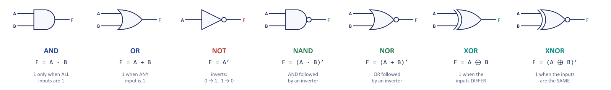
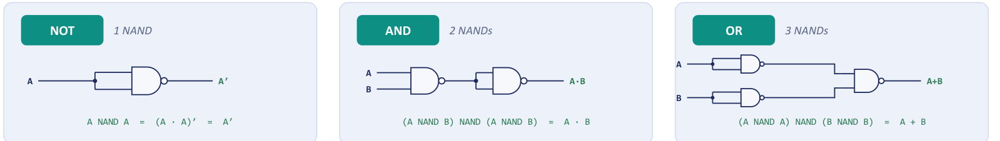
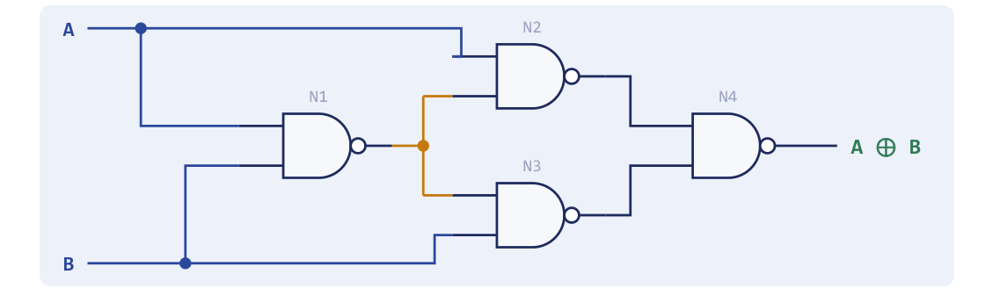
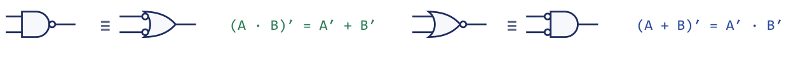
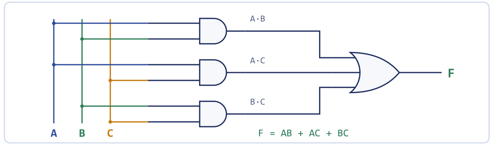

Chapter 1: Logic Gates and Boolean Algebra¶
Two voltages, seven gates, and the algebra that lets us reason about all of them
A computer is a very large arrangement of very simple switches. Every adder, register, bus and cache that you will meet later in this book is built from one kind of thing: a circuit whose output is either "on" or "off", wired to other circuits of the same kind. There is no magic layer anywhere in the machine. Every instruction that the basic computer executes eventually becomes a pattern of these tiny decision-makers opening and closing. This chapter is where that story begins, and it asks three questions in turn. What can a single gate do? How can we reason about many gates at once? And how do we go from a problem written in words to a circuit that solves it?
The answers come in three layers. The first layer is the gates themselves, the seven standard building blocks together with their truth tables and graphic symbols. The second layer is Boolean algebra, the mathematics of two-valued quantities, which lets us manipulate a circuit on paper (and, more importantly, make it smaller) before a single wire is laid. The third layer is the systematic route from a specification to hardware: write a truth table, name every row with a minterm or a maxterm, take the canonical expression, simplify it, and draw the gates. The next chapter will give us a graphical way to carry out the simplification step; here we establish everything that the graphical method rests on.
What you will learn
- Recognise and use the seven standard logic gates, and explain positive and negative logic.
- Show that NAND and NOR are universal gates, and say why XOR is not.
- Apply the Boolean postulates, theorems, duality and DeMorgan's laws to manipulate and simplify expressions.
- Express a function in canonical and standard sum-of-products (SOP) and product-of-sums (POS) form using minterms and maxterms.
- Follow the five-step procedure that turns a problem statement into a combinational logic diagram, including two-level NAND-only and NOR-only realisations.
1.1 Binary logic and the truth table¶
Digital systems work with binary logic: every signal is a variable that takes one of two discrete values, and the operations are rules that combine such variables. The two values go by many names, but they are always the same two: 0 and 1, false and true, low and high, off and on. In an electronic circuit they are represented by two voltage ranges, typically somewhere near 0 V for the low value and near 5 V or 3.3 V for the high value.
It is fair to ask why computers use only two values and not ten, since we count in tens. A decimal machine would have to tell ten different voltages apart, and that is hard: components age, temperature drifts and wires pick up noise. Distinguishing "near 0 V" from "near 5 V" is easy, and it stays easy after twenty years in a hot room. Real gates do not demand exactly 0 V or exactly 5 V. Anything below a low threshold counts as 0, anything above a high threshold counts as 1, and the band between the two thresholds is forbidden. That gap is the noise margin; it is what allows a slightly corrupted signal to be read correctly, and it is why a digital signal can be regenerated perfectly while an analogue one degrades. Digital design therefore trades range for reliability, and nearly everything else in the course, including why we need binary arithmetic, complements and Boolean algebra at all, follows from that one engineering decision.
A logic gate is an electronic circuit that produces one binary output from one or more binary inputs according to a fixed rule. The most direct way to state the rule is a truth table, which lists every possible combination of the input values together with the output for each. With \(n\) inputs there are \(2^n\) rows. A truth table is a complete description of a circuit's behaviour: two circuits with the same truth table do the same job, however differently they are built. This is also why exhaustive testing of a small circuit is possible. A block with four inputs has \(2^4 = 16\) input patterns, a block with five has \(2^5 = 32\), and applying them all proves the block correct.
1.2 The seven standard gates¶
Three gates are basic: AND, OR and NOT. Two more, NAND and NOR, are their complements and turn out to be universal. The last two, XOR and XNOR, are the "exclusive" gates used for comparison and parity. Figure 1.1 shows the ANSI/IEEE distinctive-shape symbols. The outline of the symbol tells you the function, and a small circle (a "bubble") on an output or input means that the signal is inverted at that point.

The complete two-input truth table for all of them is only four rows long, and everything about these gates is in it.
| \(A\) | \(B\) | AND \(A\cdot B\) | OR \(A+B\) | NAND \((AB)'\) | NOR \((A+B)'\) | XOR \(A\oplus B\) | XNOR \((A\oplus B)'\) |
|---|---|---|---|---|---|---|---|
| 0 | 0 | 0 | 0 | 1 | 1 | 0 | 1 |
| 0 | 1 | 0 | 1 | 1 | 0 | 1 | 0 |
| 1 | 0 | 0 | 1 | 1 | 0 | 1 | 0 |
| 1 | 1 | 1 | 1 | 0 | 0 | 0 | 1 |
NOT has a single input and the table 0 → 1, 1 → 0. Read the columns rather than the rows. NAND is the exact complement of AND, every bit flipped; NOR is the complement of OR; XNOR is the complement of XOR. It helps to read each gate aloud, because if you can say the sentence you can fill in the truth table. AND is "both", OR is "either", NOT is "opposite", NAND is "not both", NOR is "neither", and XOR is "exactly one of the two".
Inclusive OR is not 'one or the other'
In everyday speech "tea or coffee" often means one but not both. The plain OR gate is inclusive: it also outputs 1 when both inputs are 1 (the row \(A = B = 1\) gives \(A + B = 1\)). The "one or the other but not both" meaning belongs to a different gate, the exclusive-OR. Mixing the two up is the most common early slip.
XOR is 1 exactly when its two inputs differ, and it can be written in sum-of-products form as \(A \oplus B = A'B + AB'\). XNOR is the complement, \((A \oplus B)' = A'B' + AB\), and is also called the equivalence function: it answers the question "are these two bits the same?". It is literally a one-bit equality checker. Put four XNOR gates side by side and AND their outputs, and you have a 4-bit comparator that gives 1 only when two nibbles match, which is the heart of a circuit that compares an entered PIN with a stored one bit by bit.
Only the first three gates are really needed. AND, OR and NOT are functionally complete: any Boolean function can be built from them. The remaining four exist because they are cheaper, faster or more convenient in silicon.
Example 1.1: Truth table of a small expression
Problem. Write the truth table of \(F = (A + B)'\cdot C\) and say in words when \(F = 1\).
Working. Evaluate the inner OR first, then complement it, then AND with \(C\).
| \(A\) | \(B\) | \(C\) | \(A+B\) | \((A+B)'\) | \(F\) |
|---|---|---|---|---|---|
| 0 | 0 | 0 | 0 | 1 | 0 |
| 0 | 0 | 1 | 0 | 1 | 1 |
| 0 | 1 | 0 | 1 | 0 | 0 |
| 0 | 1 | 1 | 1 | 0 | 0 |
| 1 | 0 | 0 | 1 | 0 | 0 |
| 1 | 0 | 1 | 1 | 0 | 0 |
| 1 | 1 | 0 | 1 | 0 | 0 |
| 1 | 1 | 1 | 1 | 0 | 0 |
Answer. \(F = 1\) only when \(A = 0\), \(B = 0\) and \(C = 1\): neither \(A\) nor \(B\), but \(C\). (Once \(A + B\) is 1, the complement is 0 and nothing else can rescue the AND, so six of the eight rows are decided immediately.)
Gates with more than two inputs, and the 3-input XOR¶
AND and OR extend naturally to any number of inputs: a many-input AND is 1 only when all inputs are 1, a many-input OR is 1 when any input is 1. XOR needs more care. Because XOR is associative, \(A \oplus B \oplus C\) is well defined, but it is not "exactly one of the three inputs is 1". A 3-input XOR outputs 1 when an odd number of inputs is 1, so it is 1 both when one input is high and when all three are high. In general the XOR of any number of bits is the odd-parity function. That is precisely why XOR trees are used to generate and check parity bits, as the next example shows.
Example 1.2: XOR as a controlled inverter, and parity
Problem. Treat one input of an XOR gate as a control line \(C\) and the other as data \(A\). What does \(A \oplus C\) do as \(C\) switches between 0 and 1? Then use the result to find the parity of the 4-bit word 1011. Finally, for the data byte 1011 0010 find the even-parity bit that a serial link would append.
Working. From \(A \oplus C = A'C + AC'\):
- When \(C = 0\): \(A \oplus 0 = A'\cdot 0 + A\cdot 1 = A\), so the data passes through unchanged.
- When \(C = 1\): \(A \oplus 1 = A'\cdot 1 + A\cdot 0 = A'\), so the data comes out inverted.
XOR is therefore a programmable inverter: the control bit decides whether to flip \(A\) or leave it alone. This is exactly why XOR forms the sum bit of every adder (add without carry means "flip when the other bit is 1") and why chaining XORs measures parity. For 1011, evaluate left to right:
The result 1 signals an odd number of 1s, and indeed there are three. For the byte 1011 0010 count the 1s: there are four, which is even, so the XOR of all eight bits is 0 and the even-parity bit to append is 0 (the transmitted nine bits then still contain an even number of 1s). At the receiver, all nine bits are XORed together; a result of 0 means an even number of 1s arrived, so no single-bit error is detected, while a result of 1 flags an error. This works because each bit enters the XOR chain exactly once, so flipping any single bit flips the overall parity.
Answer. \(A \oplus C\) passes \(A\) when \(C = 0\) and inverts it when \(C = 1\); the parity of 1011 is 1; the parity bit for 1011 0010 is 0; a received XOR of 0 means "no error detected".
1.3 Positive and negative logic¶
The two logic values are physical voltage levels, say H (the higher) and L (the lower). Which of them stands for 1 is only a convention. In positive logic the more positive level is 1, so H = 1 and L = 0. In negative logic the assignment is reversed: L = 1 and H = 0. The hardware does not change at all; only the names we give to the two levels change.
A consequence is that the same physical gate can implement different logic functions under the two conventions. Take a gate whose output is high only when both inputs are high:
| \(A\) | \(B\) | \(Z\) |
|---|---|---|
| L | L | L |
| L | H | L |
| H | L | L |
| H | H | H |
Under positive logic (H = 1) the table reads 00 → 0, 01 → 0, 10 → 0, 11 → 1, which is AND. Under negative logic (L = 1) the same four rows read 11 → 1, 10 → 1, 01 → 1, 00 → 0, which is OR. A positive-logic AND gate is therefore a negative-logic OR gate, and the statement is a physical form of DeMorgan's theorem, which we meet shortly. In practice a designer fixes one convention for the whole design, and the choice is a labelling decision, not a change of hardware.
1.4 Universal gates¶
A gate type is universal if every Boolean function can be built from copies of that gate alone. NAND and NOR are both universal. This is more than a curiosity. In the CMOS transistor technology used to build chips, an inverting gate such as NAND is actually simpler and faster than a non-inverting AND (an AND is literally a NAND followed by an extra inverter). A fabrication line that perfects one transistor arrangement can therefore build any logic at all, which is a large part of why digital chips became cheap so quickly.
The trick that makes one gate enough is that NOT is available. Once you can invert, a NAND becomes an AND, and DeMorgan's theorem turns any OR into a NAND of inverted inputs. Figure 1.2 shows the three constructions that every examination answer needs.

Example 1.3: Showing that NAND is universal
Problem. Show, using Boolean algebra, that NAND gates alone can produce NOT, AND and OR.
Working.
- NOT. Tie both inputs of a NAND to \(A\): \((A\cdot A)' = A'\), using idempotence \(A\cdot A = A\).
- AND. Take the NAND, then invert it with a second NAND wired as a NOT: \(\big((A\cdot B)'\big)' = A\cdot B\).
- OR. Invert each input first, then NAND the results: \((A'\cdot B')' = A'' + B'' = A + B\) (DeMorgan, then involution).
Answer. NOT needs 1 NAND, AND needs 2 NANDs and OR needs 3 NANDs. Since AND, OR and NOT are functionally complete, NAND is universal.
The same argument works for NOR, with the roles of AND and OR exchanged:
| Function | NAND-only | NOR-only |
|---|---|---|
| NOT \(A\) | \(A\) NAND \(A\) | \(A\) NOR \(A\) |
| AND | \((A \text{ NAND } B)\) followed by a NOT | \((A' \text{ NOR } B')\) |
| OR | \((A' \text{ NAND } B')\) | \((A \text{ NOR } B)\) followed by a NOT |
where each complemented input \(A'\) is itself obtained from a gate whose two inputs are tied together. A short summary of the pattern, which we will exploit in Section 1.9, is that any two-level SOP circuit can be turned into an all-NAND circuit and any two-level POS circuit into an all-NOR circuit.
Building XOR from NAND gates¶
Because XOR is used so often it is worth knowing how it is built from universal gates. Four 2-input NAND gates suffice, as shown in Figure 1.3. The XNOR gate needs a fifth NAND wired as an inverter on the output.

Example 1.4: XOR from four NAND gates
Problem. Show that \(A \oplus B\) can be realised with exactly four 2-input NAND gates and give the output of each gate.
Working. Label the gates as in Figure 1.3. Gate N1 receives \(A\) and \(B\); gates N2 and N3 each receive N1's output together with one of the inputs; gate N4 combines N2 and N3.
| Gate | Inputs | Output expression | Simplified |
|---|---|---|---|
| N1 | \(A\), \(B\) | \((AB)'\) | \(A' + B'\) |
| N2 | \(A\), N1 | \(\big(A(AB)'\big)'\) | \(\big(A(A'+B')\big)' = (AB')'\) |
| N3 | \(B\), N1 | \(\big(B(AB)'\big)'\) | \((A'B)'\) |
| N4 | N2, N3 | \(\big((AB')'(A'B)'\big)'\) | \(AB' + A'B = A \oplus B\) |
For N2: \(A(A' + B') = AA' + AB' = AB'\), so N2 outputs \((AB')'\). For N3: \(B(A'+B') = A'B\), so N3 outputs \((A'B)'\). The last step uses DeMorgan, \((XY)' = X' + Y'\), with \(X = (AB')'\) and \(Y = (A'B)'\).
Answer. Four NAND gates are enough: \(F = \big((AB')'(A'B)'\big)' = A'B + AB' = A \oplus B\).
Why XOR is not universal¶
XOR looks powerful, so it is natural to ask why it is not universal. The reason is structural. A circuit made only of XOR gates and the input variables (and the constants 0 and 1) can compute only functions that are linear in the sense of parity: sums modulo 2 of some of the inputs, possibly with a 1 added. \(A \oplus A = 0\), \(A \oplus 0 = A\) and \(A \oplus 1 = A'\) show that XOR with a constant gives you NOT and the constants, but however many XORs you chain, the result is always the parity of a subset of the inputs. A function such as AND is not of that form, so no XOR network can produce it. NAND, by contrast, produces NOT, AND and OR on its own. Similarly an AND gate on its own can never invert a signal, so it cannot express complemented functions and is not complete.
Why NAND can build any circuit but AND cannot
NAND produces NOT (tie the inputs together) and, from NOT, it builds AND and OR: it is functionally complete. AND alone never inverts, so the complemented inputs and outputs that most functions need are out of its reach.
1.5 Boolean algebra¶
Boolean algebra is the mathematics of two-valued logic. It is defined on the set \(\{0, 1\}\) with three operations: OR (written \(+\)), AND (written \(\cdot\), often omitted) and NOT (written with a prime, \(A'\)). The identities below are the postulates and basic theorems you will use every day. Each has an OR form and an AND form, which is the dual of the OR form (duality is explained shortly).
| # | OR form | AND form (dual) | Name |
|---|---|---|---|
| 1 | \(A + 0 = A\) | \(A\cdot 1 = A\) | Identity element |
| 2 | \(A + 1 = 1\) | \(A\cdot 0 = 0\) | Null / dominance |
| 3 | \(A + A = A\) | \(A\cdot A = A\) | Idempotence |
| 4 | \(A + A' = 1\) | \(A\cdot A' = 0\) | Complement |
| 5 | \((A')' = A\) | Involution | |
| 6 | \(A + B = B + A\) | \(AB = BA\) | Commutative |
| 7 | \(A + (B + C) = (A + B) + C\) | \(A(BC) = (AB)C\) | Associative |
| 8 | \(A(B + C) = AB + AC\) | \(A + BC = (A + B)(A + C)\) | Distributive |
| 9 | \(A + AB = A\) | \(A(A + B) = A\) | Absorption |
| 10 | \(A + A'B = A + B\) | \(A(A' + B) = AB\) | Absorption (second form) |
| 11 | \((A + B)' = A'B'\) | \((AB)' = A' + B'\) | DeMorgan |
| 12 | \(AB + AB' = A\) | \((A + B)(A + B') = A\) | Combining (adjacency) |
| 13 | \(AB + A'C + BC = AB + A'C\) | \((A + B)(A' + C)(B + C) = (A + B)(A' + C)\) | Consensus |
Almost all of these look like ordinary algebra, until they do not. Four of them deserve special attention because they break the habits of school algebra. First, \(A + A = A\), not \(2A\): there is no 2 in this algebra, only 0 and 1. Second, \(A + 1 = 1\): once an OR has a 1 anywhere, nothing else can change the answer. Third, there is no subtraction and no division, so you can never "cancel" a term the way you do with numbers. Fourth, the second distributive law \(A + BC = (A + B)(A + C)\) has no counterpart in ordinary algebra at all. Students lose marks by refusing to believe it; check it once in a truth table and you will trust it for good. Because there are only two values, a truth table with \(2^n\) rows settles any identity in \(n\) variables for ever, a luxury that ordinary algebra does not have. (If you are ever in doubt about a rule, the truth table is the ground truth that these identities merely package.)
The most useful single rule is absorption, \(A + AB = A\). Read it as "if \(A\) alone already makes the output 1, adding a term that also needs \(A\) tells you nothing new". Its second form, \(A + A'B = A + B\), deletes a complemented literal and is the next most useful.
Operator precedence
Evaluate in this order: (1) parentheses, (2) NOT, (3) AND, (4) OR. So \(A + B\cdot C'\) means \(A + \big(B\cdot(C')\big)\), and \(A\cdot B'\) means \(A\cdot(B')\). When in doubt, add parentheses.
Duality¶
The dual of an expression is obtained by swapping every AND with OR and every 0 with 1, leaving the variables alone. Every valid Boolean identity stays valid when it is dualised, which is exactly why the table above has two columns: you get half the theorems free. For example, the dual of \(x + xy = x\) is \(x(x + y) = x\), and the dual of \(x(y + z) = xy + xz\) is \(x + yz = (x + y)(x + z)\).
Duality is not complement
The dual swaps the operators and the constants but leaves the variables as they are. The complement is the logical negation of the whole function, so it also inverts every variable. For \(A + B\) the dual is \(A\cdot B\), whereas the complement is \(A'\cdot B'\). Confusing the two is a classic error (see Exercise 1.6).
1.6 DeMorgan's theorems¶
DeMorgan's two theorems tell us how to complement a whole expression:
The rule is "break the bar, change the sign". Complement each variable and swap AND with OR. They extend to any number of variables, for example \((A + B + C)' = A'B'C'\) and \((ABC)' = A' + B' + C'\). In words, "not (either)" is "neither", and "not (both)" is "at least one is not". These are statements you already make every day. "It is not true that the door is open or the window is open" means the same as "the door is shut and the window is shut". "It is not true that I have both a ticket and a passport" means "I am missing at least one of them". DeMorgan simply writes this down.
The single most common error
\((x + y)'\) is not \(x' + y'\), and \((xy)'\) is not \(x'y'\). The operation flips when the bar is broken.
Graphically the theorems say that pushing a bubble through a gate changes the gate's shape. An AND gate with a bubble on its output is equivalent to an OR gate with bubbles on both inputs, and an OR with a bubble on its output equals an AND with bubbles on both inputs (Figure 1.4). This is exactly why a positive-logic AND is a negative-logic OR, and it is how engineers redraw a circuit to match whatever gates they have in stock.

Example 1.5: Proving DeMorgan's theorem by truth table
Problem. Prove \((A + B)' = A'\cdot B'\) and state the dual of the companion theorem.
Working. Because there are only two variables, four rows settle it.
| \(A\) | \(B\) | \(A+B\) | \((A+B)'\) | \(A'\) | \(B'\) | \(A'B'\) |
|---|---|---|---|---|---|---|
| 0 | 0 | 0 | 1 | 1 | 1 | 1 |
| 0 | 1 | 1 | 0 | 1 | 0 | 0 |
| 1 | 0 | 1 | 0 | 0 | 1 | 0 |
| 1 | 1 | 1 | 0 | 0 | 0 | 0 |
The columns \((A+B)'\) and \(A'B'\) are identical in all four rows, so the theorem holds. The same construction proves \((AB)' = A' + B'\). The two theorems are duals of each other: dualising \((AB)' = A' + B'\) gives \((A + B)' = A'B'\).
Answer. The two highlighted columns agree in every row, so \((A+B)' = A'B'\).
DeMorgan is also what lets us complement a function. To complement an expression, apply DeMorgan repeatedly, complementing each literal and interchanging AND with OR. Equivalently, the complement of a function is the OR of the minterms that are absent from it. Note the neat relation between the three operations: the complement of an expression equals its dual with every variable complemented.
Example 1.6: Complement and dual
Problem. For \(F = A'BC + AB'C' + AB\) find (i) the dual \(F_d\) and (ii) the complement \(F'\). Then complement \(G = AB + C'D\) and express the result as a product of sums and as a sum of products.
Working (F). The dual swaps every \(\cdot\) with \(+\) and every \(+\) with \(\cdot\), leaving the variables untouched:
For the complement, apply DeMorgan term by term:
As promised, \(F'\) is \(F_d\) with every variable complemented.
Working (G). Treat \(G\) as a sum of two products:
Multiplying out gives the sum-of-products form of the complement:
Answer. \(F_d = (A'+B+C)(A+B'+C')(A+B)\); \(F' = (A+B'+C')(A'+B+C)(A'+B')\); \(G' = (A'+B')(C+D') = A'C + A'D' + B'C + B'D'\).
1.7 Algebraic simplification¶
Why bother with all these rules when the truth table already says everything? Because every gate you delete is money, power and time saved. Boolean algebra plays the role for a circuit that factoring plays for a formula: \(AB + AB'\) and \(A\) compute exactly the same output, but the first needs three gates and the second needs none. On a chip stamped out a billion times, shaving a gate off a design is a real engineering win.
A method that always works is the following. First remove parentheses by distributing. Second, collect and delete repeats using \(x + x = x\) and \(xx = x\). Third, look for absorption, \(x + xy = x\). Fourth, look for \(x + x'y = x + y\). Stop when no rule applies. The examples below show the rules at work, with the law named at each step as an examiner would require.
Example 1.7: Simplifying three expressions
Problem. Simplify (a) \(F = A + A'B\), (b) \(F = AB + A(B + C) + B(B + C)\), (c) \(F = (A + B)(A + B')\).
Working.
(a) By the second distributive law,
using the complement law \(A + A' = 1\) and then the identity \(1\cdot x = x\).
(b) Expand: \(AB + AB + AC + BB + BC\). Now \(AB + AB = AB\) and \(BB = B\), so \(F = AB + AC + B + BC\). Absorption gives \(B + BC = B\) and \(AB + B = B\), leaving
(c) By the second distributive law,
using the complement law \(BB' = 0\) and the identity \(x + 0 = x\).
Answer. (a) \(A + B\), (b) \(B + AC\), (c) \(A\).
The next example shows a very useful trick: replicating a term. Since \(x + x = x\), any term can be repeated as often as we please, and the copies can then be combined with different neighbours.
Example 1.8: Simplifying by replication (the majority function)
Problem. Simplify \(F(A,B,C) = A'BC + AB'C + ABC' + ABC\) using the theorems only, and say what the result computes.
Working. The term \(ABC\) is the one that combines with each of the others, so write it three times (idempotence), giving six terms in all:
Pair each of the first three terms with a copy of \(ABC\) and factor out the common two literals:
Answer. \(F = AB + AC + BC\). This is the majority function of three variables: the output is 1 whenever two or more of the three inputs are 1. It is the carry-out expression of a full adder, which we will build in a later chapter. The original expression needs four 3-input ANDs and one 4-input OR (5 gates, 12 literals); the simplified one needs three 2-input ANDs and one 3-input OR (4 gates, 6 literals).
The consensus theorem¶
The consensus theorem, \(AB + A'C + BC = AB + A'C\), says that the term \(BC\) is redundant: wherever \(BC\) is 1, one of the other two terms is already 1, because either \(A = 1\) (so \(AB = B = 1\) covers it) or \(A = 0\) (so \(A'C = C = 1\) covers it). The term \(BC\) is called the consensus of \(AB\) and \(A'C\). Its dual is \((A + B)(A' + C)(B + C) = (A + B)(A' + C)\).
Example 1.9: Proving the consensus theorem
Problem. Simplify \(F = xy + x'z + yz\) and identify the redundant term.
Working. Multiply the suspect term \(yz\) by \((x + x') = 1\):
Now \(xy + xyz = xy(1 + z) = xy\) and \(x'z + x'yz = x'z(1 + y) = x'z\), so
Answer. \(F = xy + x'z\); the term \(yz\) is redundant because it is the consensus of \(xy\) and \(x'z\). (A truth table confirms the two expressions agree on all eight rows. We shall see in Chapter 2 that on a Karnaugh map the consensus term is the one that bridges two adjacent groups, and that a redundant term can nonetheless matter electrically.)
1.8 Boolean functions and canonical forms¶
A Boolean function is described either by an algebraic expression or, equivalently, by a truth table. Two forms recur constantly. A sum of products (SOP) is a set of AND terms ORed together, such as \(AB + A'C\). A product of sums (POS) is a set of OR terms ANDed together, such as \((A + B)(A' + C)\). The questions that follow are how to name every row of a truth table, how to write down a function from its truth table without any guesswork, and how to convert between the forms.
Minterms and maxterms¶
For \(n\) variables there are \(2^n\) combinations of values. Each combination has a minterm, an AND term containing every variable exactly once that is 1 for exactly that combination, and a maxterm, an OR term containing every variable exactly once that is 0 for exactly that combination. The rules for writing them are mirror images of each other:
- Minterm \(m_i\): a variable appears unprimed if its bit in the row is 1 and primed if its bit is 0.
- Maxterm \(M_i\): a variable appears primed if its bit is 1 and unprimed if its bit is 0, exactly the opposite.
The subscript is simply the row number read in binary. Row 5 of a three-variable table is \(101\), so \(A = 1\), \(B = 0\), \(C = 1\), giving the minterm \(m_5 = AB'C\) and the maxterm \(M_5 = A' + B + C'\).
| Index | \(A\,B\,C\) | Minterm \(m_i\) | Maxterm \(M_i\) |
|---|---|---|---|
| 0 | 0 0 0 | \(A'B'C'\) | \(A + B + C\) |
| 1 | 0 0 1 | \(A'B'C\) | \(A + B + C'\) |
| 2 | 0 1 0 | \(A'BC'\) | \(A + B' + C\) |
| 3 | 0 1 1 | \(A'BC\) | \(A + B' + C'\) |
| 4 | 1 0 0 | \(AB'C'\) | \(A' + B + C\) |
| 5 | 1 0 1 | \(AB'C\) | \(A' + B + C'\) |
| 6 | 1 1 0 | \(ABC'\) | \(A' + B' + C\) |
| 7 | 1 1 1 | \(ABC\) | \(A' + B' + C'\) |
Notice that \(M_i = m_i'\) for every \(i\): the maxterm is the complement of the minterm with the same index. Intuitively, a minterm is a "detector": it fires (gives 1) for exactly one input pattern and is 0 everywhere else. A maxterm is a "blocker": it is 0 for exactly one pattern and 1 everywhere else.
Do not mix the two conventions
In a minterm a 0 bit means the variable is primed; in a maxterm a 0 bit means the variable is unprimed. Writing \(M_5\) as \(A + B' + C\) (minterm style, with the bits inverted wrongly) silently corrupts every POS you write. Check one row against the table before trusting a conversion.
Canonical SOP and canonical POS¶
The detector idea gives a direct way to write down a function. OR together the minterms of every row where \(F = 1\) and you have \(F\); this is the canonical SOP, written \(F = \sum m(\dots)\). Dually, AND together the maxterms of every row where \(F = 0\) and you again have \(F\); this is the canonical POS, written \(F = \prod M(\dots)\). Two routes, one destination. Each minterm switches on one row of the table; each maxterm switches off one row.
Converting between the two costs nothing. Every index from \(0\) to \(2^n - 1\) is either a row where \(F = 1\) or a row where \(F = 0\), so the indices missing from the \(m\) list are exactly those in the \(M\) list. You never have to redo the truth table; just list the missing numbers.
A function that is 1 in only two rows out of eight is far shorter as a sum of two minterms than as a product of six maxterms, and vice versa. Count the 1s and the 0s before you start writing, and use whichever list is shorter.
A form is canonical when every term contains every variable (that is what a minterm or maxterm is). It is standard when terms may have fewer variables, for example \(F = y + x'y'z\) or \(AB + A'C\). Canonical form is unique; standard form is what you actually build, and the simplification methods of this chapter and the next take you from one to the other.
Example 1.10: From a truth table to both canonical forms
Problem. \(F(A,B,C) = 1\) for the input combinations 001, 011, 101, 110 and 0 otherwise. Write \(F\) in canonical SOP and canonical POS form.
Working. The combinations are rows 1, 3, 5 and 6, so \(F = 1\) in rows 1, 3, 5, 6 and \(F = 0\) in rows 0, 2, 4, 7.
| \(A\,B\,C\) | Row | \(F\) |
|---|---|---|
| 0 0 0 | 0 | 0 |
| 0 0 1 | 1 | 1 |
| 0 1 0 | 2 | 0 |
| 0 1 1 | 3 | 1 |
| 1 0 0 | 4 | 0 |
| 1 0 1 | 5 | 1 |
| 1 1 0 | 6 | 1 |
| 1 1 1 | 7 | 0 |
SOP: OR the minterms of the rows where \(F = 1\):
POS: AND the maxterms of the rows where \(F = 0\):
Answer. \(F = \sum m(1,3,5,6) = \prod M(0,2,4,7)\). Both describe the same four rows: one lists the 1s, the other blocks the 0s.
Example 1.11: Expanding a standard form to canonical form
Problem. Express \(F(A,B,C) = A + B'C\) as a sum of minterms and as a product of maxterms. Also find the complement \(F'\).
Working. A term that is missing a variable \(x\) is multiplied by \((x + x')\), which is 1 and so changes nothing. Expand each term to full width:
Collect the distinct minterms. The minterm \(m_5\) appears twice but is written once, since \(x + x = x\):
The remaining indices are the zeros of \(F\), so the canonical POS is built from those:
The complement is the sum of the absent minterms, \(F' = \sum m(0,2,3) = A'B'C' + A'BC' + A'BC\), which simplifies to \(A'C' + A'B = A'(B + C')\). As a check, the two index lists \(\{1,4,5,6,7\}\) and \(\{0,2,3\}\) together cover \(0\) to \(7\).
Answer. \(F = \sum m(1,4,5,6,7) = \prod M(0,2,3)\).
A minterm produced twice is written once
Students who list \(m_5\) twice get the right function but a malformed canonical form, and lose the mark. Duplicates collapse because \(x + x = x\).
1.9 Combinational circuits and the design procedure¶
A digital circuit is any interconnection of logic gates (and possibly memory elements) operating on binary signals. A combinational circuit is the special case whose outputs depend only on the present inputs. It has no memory and no feedback: give it the same inputs at any time and it returns the same outputs, which is what makes a truth table a complete description of it. Adders, decoders and multiplexers are combinational. As soon as we add memory and a clock we get a sequential circuit, which is the subject of Chapter 3.
Designing a combinational circuit always follows the same loop: specification, truth table, minimisation, hardware. In five steps:
- State the problem in words, unambiguously.
- Assign variables: name the inputs and outputs and fix their meaning.
- Build the truth table, one row per input combination. This is the specification.
- Simplify, by algebra or by a Karnaugh map (next chapter), to get a minimal expression.
- Draw the logic diagram, one gate per operation in the simplified expression.
Step 3 is the one that matters. Building the truth table is the design: everything after it is mechanical, since simplification is a procedure and drawing gates is transcription. Most marks lost in this subject are lost by writing a truth table that does not match the words of the question, so read step 1 twice.
Example 1.12: A two-out-of-three voter
Problem. Design a circuit whose output is 1 when at least two of its three inputs \(A\), \(B\), \(C\) are 1.
Working. Steps 1 and 2: inputs \(A, B, C\); output \(F\). Step 3: the output is 1 on rows 3 (011), 5 (101), 6 (110) and 7 (111), so \(F = \sum m(3,5,6,7)\). Step 4: Example 1.8 showed algebraically (and a Karnaugh map will show again in Chapter 2) that \(F = AB + AC + BC\). Step 5: one AND gate per product term and one OR gate to collect them (Figure 1.5).

Answer. \(F = AB + AC + BC\), three 2-input AND gates and one 3-input OR gate.
Notice the shape of that circuit: a layer of AND gates feeding a single OR gate. Every SOP expression produces such a two-level circuit, with one AND gate per product term, and every POS expression a two-level OR-AND circuit. Two-level circuits are attractive because they give the minimum signal delay, and they are easy to convert to a single gate type by DeMorgan.
Example 1.13: NAND-only and NOR-only two-level circuits
Problem. (a) Implement \(F = AB + CD\) with NAND gates only and say how many are needed. (b) Implement \(G = (A + B)(C + D)\) with NOR gates only.
Working. (a) Complement twice, then apply DeMorgan to the outer complement:
This is three NAND gates: N1 computes \((AB)'\), N2 computes \((CD)'\), and N3 NANDs the two results to give \(AB + CD\).
(b) By the dual argument,
NOR1 computes \((A + B)'\), NOR2 computes \((C + D)'\), and NOR3 NORs the two to give \(G\). This is three NOR gates.
Answer. (a) 3 NAND gates; (b) 3 NOR gates. In general any two-level AND-OR network converts directly into a NAND-NAND network with the same topology, and a two-level OR-AND network maps directly onto NOR-NOR.
One last remark about the design loop. A Boolean function may be given as a truth table, a Boolean expression (SOP or POS), a logic diagram, a Karnaugh map, a minterm or maxterm list, or a hardware description. All of these are interconvertible, and you should choose whichever is handiest for the task at hand. Typical uses of what we have developed here are the one-bit full adder (its sum is the 3-input XOR, an odd-parity function, and its carry is the majority function of Example 1.12), the equality comparator built from XNOR gates, and the parity generators and checkers of Example 1.2.
1.10 Summary¶
Key points
- Binary logic uses two values for reliability. A truth table with \(2^n\) rows is a complete description of a gate or function.
- Seven standard gates: AND, OR and NOT are basic; NAND and NOR are universal; XOR (1 when inputs differ) and XNOR (1 when inputs are equal) compare bits. The 3-input XOR is the odd-parity function.
- Positive logic makes the higher voltage 1, negative logic the lower. A positive-logic AND is a negative-logic OR.
- NOT is one NAND, AND is two, OR is three. XOR is not universal because XOR networks can only produce parity (linear) functions.
- Identities: \(x + x = x\), \(x + 1 = 1\), \(x + yz = (x+y)(x+z)\). Absorption \(x + xy = x\) is the workhorse. Duality swaps AND with OR and 0 with 1, so every identity comes in pairs.
- DeMorgan: \((x+y)' = x'y'\) and \((xy)' = x' + y'\), "break the bar, change the sign".
- Minterm \(m_i\) lists a row where \(F = 1\); maxterm \(M_i\) lists a row where \(F = 0\); \(M_i = m_i'\). The index lists of the two canonical forms are complements.
- A combinational circuit has no memory. The design loop is statement, variables, truth table, simplification, diagram.
| Concept | Rule |
|---|---|
| Gates | AND \(A\cdot B\) (all 1); OR \(A+B\) (any 1); NAND \((AB)'\); NOR \((A+B)'\); XOR \(A\oplus B = A'B + AB'\) (differ); XNOR \((A\oplus B)'\) (equal) |
| Universal | NAND and NOR: NOT = 1 gate, AND = 2, OR = 3 |
| Duality | Swap \(\cdot \leftrightarrow +\) and \(0 \leftrightarrow 1\); variables unchanged |
| DeMorgan | \((x+y)' = x'y'\), \((xy)' = x'+y'\) |
| Minterm / maxterm | Minterm: 1 bit = unprimed. Maxterm: 1 bit = primed. \(M_i = m_i'\) |
| Canonical forms | SOP: \(\sum m\) (rows where \(F=1\)). POS: \(\prod M\) (rows where \(F=0\)) |
| Handy theorems | \(A + A'B = A + B\); \(AB + AB' = A\); consensus \(AB + A'C + BC = AB + A'C\) |
| Two-level realisation | SOP gives all-NAND; POS gives all-NOR |
1.11 Exercises¶
Exercise 1.1. A machine may start only when all three safety interlocks are simultaneously closed (logic 1). Which single gate directly expresses this rule? (a) OR (b) AND (c) NAND (d) XOR
Answer
(b) AND. The output is 1 only when all three inputs are 1.
Exercise 1.2. You want to test a combinational block exhaustively by applying every possible input pattern. How many patterns are needed for 4 inputs? For 5 inputs?
Answer
A block with \(n\) inputs has \(2^n\) input patterns: \(2^4 = 16\) for four inputs and \(2^5 = 32\) for five.
Exercise 1.3. Which expression equals \(A \oplus B\) (output 1 exactly when the inputs differ)? (a) \(AB + A'B'\) (b) \(A'B + AB'\) (c) \(A'B'\) (d) \(A + B\)
Answer
(b). \(A'B + AB'\) is 1 on rows 01 and 10 only. Option (a) is XNOR.
Exercise 1.4. Three of the following are equal; which one is not equal to \(A + B\)? (a) \(A + A'B\) (b) \(A'B + AB' + AB\) (c) \((A + B)(A + B')\) (d) \(A'B + A\)
Answer
(c). \((A+B)(A+B') = A + BB' = A\), not \(A + B\). Option (a) is \(A + B\) by absorption (second form); (b) is \(A'B + A(B' + B) = A'B + A = A + B\); (d) equals (a).
Exercise 1.5. The dual of the expression \(A + BC\) is: (a) \(A(B + C)\) (b) \(A'(B' + C')\) (c) \(A + B + C\) (d) \(A(B' + C')\)
Answer
(a). The dual swaps \(+\) and \(\cdot\) and leaves the variables alone. Option (b) and (d) complement variables, which is what the complement does, not the dual.
Exercise 1.6. True or false: duality and complement of a Boolean expression are the same operation. Then, for \(F = A + B'C\), write both the dual and the complement.
Answer
False. The dual swaps AND with OR and 0 with 1 but leaves the variables unchanged: \(F_d = A(B' + C)\). The complement is the logical negation, obtained by DeMorgan: \(F' = (A + B'C)' = A'(B + C')\). The dual is a structural swap of operators only; the complement also inverts every variable.
Exercise 1.7. Explain the difference between positive and negative logic. Show that a gate that acts as an AND gate under positive logic behaves as an OR gate under negative logic.
Answer
In positive logic the higher voltage is 1; in negative logic the lower voltage is 1. The physical gate has output H only when both inputs are H. Under negative logic H = 0 and L = 1, so the output is L (logic 1) whenever either input is L (logic 1), which is the OR function. The result follows from DeMorgan's theorem: swapping the voltage assignment complements every input and the output, and \((A'B')' = A + B\).
Exercise 1.8. Using only NAND gates, design circuits for (a) NOT, (b) AND and (c) OR. Justify each algebraically and say how many NAND gates the OR needs.
Answer
(a) \((A\cdot A)' = A'\): one NAND with its inputs tied together. (b) \(\big((AB)'\big)' = AB\): two NANDs, the second used as an inverter. (c) \((A'B')' = A + B\): two NANDs used as inverters, one for each input, followed by a third NAND, so the OR needs three NAND gates.
Exercise 1.9. Explain why NAND and NOR are universal but XOR is not.
Answer
NAND and NOR each reproduce NOT, AND and OR, and {AND, OR, NOT} is functionally complete. A network built only from XOR gates (and constants) can produce only parity-type (linear) functions, namely the XOR of a subset of the inputs, possibly complemented. AND and OR are not of this form, so they can never be built from XORs alone.
Exercise 1.10. A serial link appends an even-parity bit so that every 8-bit byte carries an even number of 1s. (a) Which gates generate the parity bit? (b) What parity bit is sent for the byte 1011 0010? (c) The receiver XORs all nine received bits; what result signals "no error detected", and why?
Answer
(a) A tree of XOR gates: the parity bit is the XOR of the eight data bits. (b) The byte has four 1s (even), so the parity bit is 0. (c) A result of 0: the nine bits contain an even number of 1s, so no single-bit error is detected. A result of 1 means an odd number of 1s, so some bit (or an odd number of bits) was corrupted.
Exercise 1.11. Simplify each expression to the fewest literals: (a) \(F = A + A'B\) (b) \(F = AB + AB' + A'B\) (c) \(F = (A + B)(A + B')\).
Answer
(a) \(A + B\). (b) \(AB + AB' = A\), so \(F = A + A'B = A + B\). (c) \(A + BB' = A\).
Exercise 1.12. Using the consensus theorem, simplify \(F = xy + x'z + yz\). Identify the redundant term and say why it is redundant.
Answer
\(F = xy + x'z\). The term \(yz\) is the consensus of \(xy\) and \(x'z\): whenever \(yz = 1\), either \(x = 1\) (then \(xy = 1\)) or \(x = 0\) (then \(x'z = 1\)), so the term never adds a 1 of its own.
Exercise 1.13. Find the complement of \(F = A'B + CD'\) and express it in product-of-sums form, then multiply it out.
Answer
By DeMorgan, \(F' = (A'B)'\,(CD')' = (A + B')(C' + D)\), which is the POS form. Multiplying out: \(F' = AC' + AD + B'C' + B'D\).
Exercise 1.14. Spot the error. A student "simplifies" \(F = AB + A'B'\) as \((A + A')(B + B') = 1\cdot 1 = 1\) and concludes \(F\) is always 1. Find the mistake and say what \(F\) really is.
Answer
The step \(AB + A'B' = (A + A')(B + B')\) is invalid: the product \((A+A')(B+B')\) multiplies out to \(AB + AB' + A'B + A'B'\), which has four terms, not two. In fact \(AB + A'B' = (A \oplus B)'\), the XNOR (equivalence) function; it is 1 only on the rows \(A = B = 0\) and \(A = B = 1\), and 0 on the other two.
Exercise 1.15. Given \(F(A,B,C) = A'B + BC' + AB'C\), build its truth table and express \(F\) as (a) a sum of minterms and (b) a product of maxterms.
Answer
The term \(A'B\) is 1 on rows 2 and 3; \(BC'\) on rows 2 and 6; \(AB'C\) on row 5. Hence \(F = 1\) exactly on rows 2, 3, 5, 6. (a) \(F = \sum m(2,3,5,6)\). (b) \(F = \prod M(0,1,4,7)\). As a check, \(ABC\) (row 7) is 0 in all three product terms, so \(m_7\) is not in the SOP and \(M_7\) is in the POS.
Exercise 1.16. Draw a gate diagram for \(F = AB + A'C\) using AND, OR and NOT gates, then redraw it using NAND gates only.
Answer
AND-OR version: one inverter for \(A\), two AND gates (\(AB\) and \(A'C\)) and one OR gate. NAND-only version: replace the two AND gates and the OR gate by three NAND gates in a two-level arrangement, \(F = \big((AB)'\,(A'C)'\big)'\), and keep (or build from a NAND with tied inputs) the inverter for \(A\). That is four NAND gates in total.
Exercise 1.17. Expand \(F(A,B,C) = A + BC\) into canonical sum-of-minterms form.
Answer
\(A = m_4 + m_5 + m_6 + m_7\) and \(BC = A'BC + ABC = m_3 + m_7\). Collecting: \(F = \sum m(3,4,5,6,7)\).
Exercise 1.18. A block computes \(F = (A \oplus B) \oplus C\). (a) Without writing the full table, predict \(F\) for \((A,B,C) = (1,1,0)\) and \((1,0,1)\). (b) Which well-known function is this? (c) How many of the eight rows give \(F = 1\)?
Answer
(a) For \((1,1,0)\): \(1\oplus 1 = 0\), \(0 \oplus 0 = 0\), so \(F = 0\). For \((1,0,1)\): \(1 \oplus 0 = 1\), \(1 \oplus 1 = 0\), so \(F = 0\). (b) It is the 3-input XOR, the odd-parity function (1 iff an odd number of inputs is 1). (c) Four rows (001, 010, 100, 111) give \(F = 1\).
Exercise 1.19. Write \(F(A,B,C) = \sum m(0,2,5,7)\) in canonical POS form, and expand \(F = AB + C\) into a sum of minterms of three variables.
Answer
\(F\) is 0 in rows 1, 3, 4, 6, so \(F = \prod M(1,3,4,6) = (A+B+C')(A+B'+C')(A'+B+C)(A'+B'+C)\). For the second part, \(AB = AB(C + C') = m_6 + m_7\) and \(C = (A + A')(B + B')C = m_1 + m_3 + m_5 + m_7\), so \(F = \sum m(1,3,5,6,7)\).
Exercise 1.20. Think deeper. Shannon's expansion says any function can be split about a variable \(A\) as \(F = A'\cdot F(0,B,C,\dots) + A\cdot F(1,B,C,\dots)\). A 2-to-1 multiplexer with select line \(A\) outputs \(A'\cdot \text{in}_0 + A\cdot \text{in}_1\). Argue why a tree of 2-to-1 multiplexers can realise any Boolean function.
Answer
The multiplexer equation has exactly the shape of Shannon's expansion. Feed the two cofactors \(F(0,B,C,\dots)\) and \(F(1,B,C,\dots)\) into the data inputs \(\text{in}_0\) and \(\text{in}_1\) and the select line \(A\) picks the right one. Each cofactor is itself a function of fewer variables, so it can be expanded about the next variable with further multiplexers. The recursion ends in the constants 0, 1 or a single variable, so a tree of 2-to-1 multiplexers realises any function: the multiplexer is a universal building block.